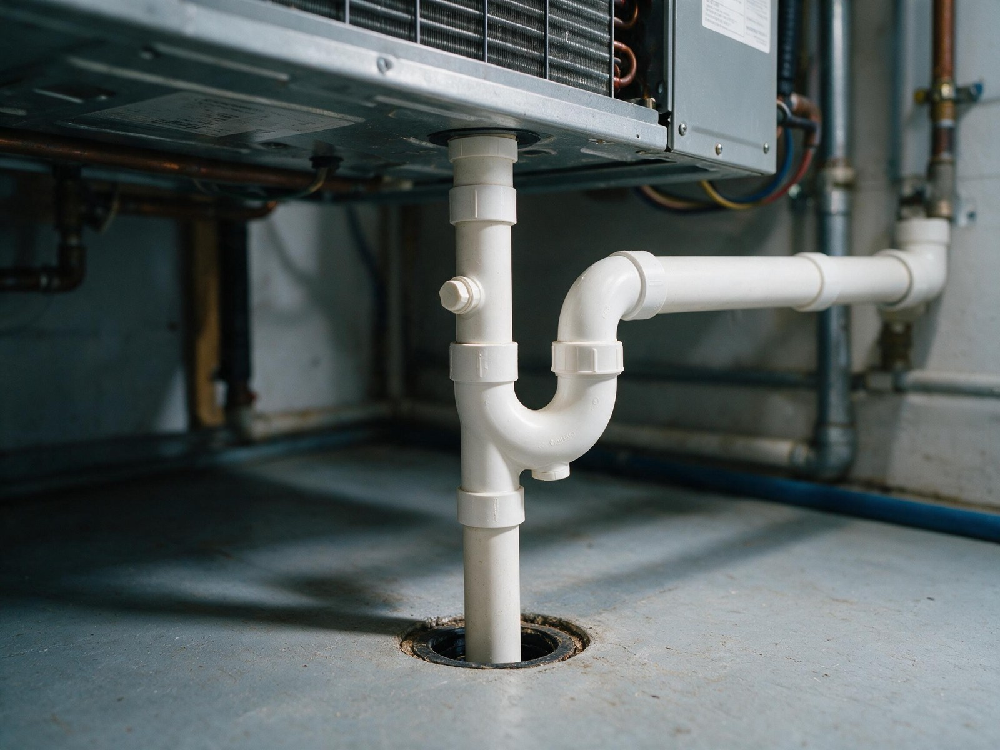
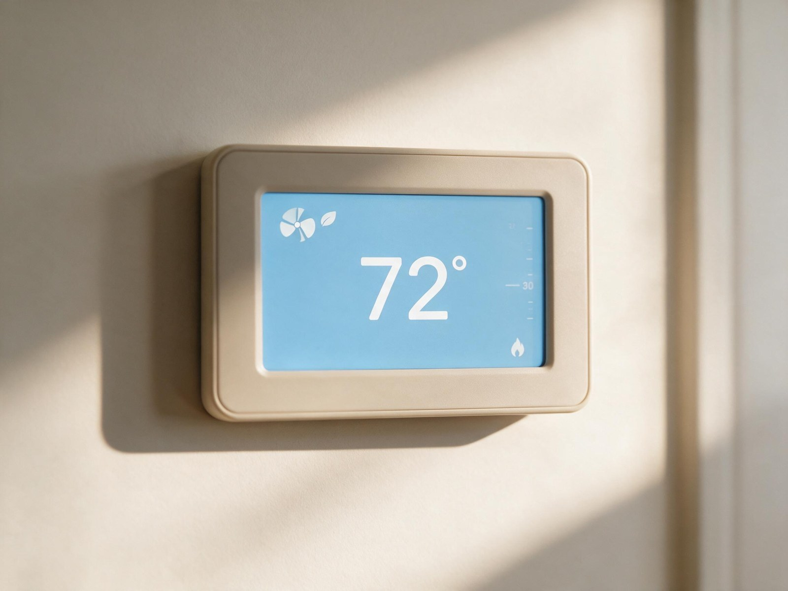

By the Editorial Team | Published: August 2026 | Last Updated: August 2026
The Drive Electronics That Changed Residential Cooling
Inverter-driven residential air conditioning uses a variable-frequency drive to change the compressor motor's electrical frequency in real time, which changes compressor RPM, which changes refrigerant mass flow, which changes delivered cooling capacity. The technology adds a control layer that fixed-speed and staged compressors do not have, and it changes almost every operational characteristic of the equipment that follows downstream. Understanding the drive electronics themselves, separately from the marketing category of "variable-speed AC," is the fastest way to see why the class behaves the way it does.
The core technology comes from industrial motor control, not from residential HVAC. Variable-frequency drives have been used in commercial refrigeration and industrial motion control for decades. Residential adoption became practical when semiconductor costs dropped enough that a full inverter drive could be packaged inside a homeowner-affordable outdoor unit, roughly the mid-2010s. The equipment class is not new physics; it is mature control electronics newly applied to a residential price point.
How a Variable-Frequency Drive Actually Works
The residential inverter drive takes 240-volt AC power from the service disconnect, converts it to DC through a rectifier stage, then reconstructs a synthetic AC waveform at a variable frequency through a set of insulated-gate bipolar transistors (IGBTs). By changing the output frequency, the drive changes the compressor motor's rotational speed. A conventional single-stage compressor runs at 3450 RPM (60 Hz line frequency); an inverter-driven compressor can run anywhere from roughly 900 RPM to 4200 RPM depending on the drive's programmed range.
Compressor RPM directly determines refrigerant mass flow rate. At low RPM the compressor moves less refrigerant per second, which reduces heat absorbed at the indoor coil per second, which reduces delivered cooling capacity. At high RPM the reverse. The relationship is roughly linear across the working range, which is why continuous modulation between about 25 percent and 100 percent of nameplate capacity is achievable in production equipment.

What the Drive Enables That Fixed-Speed Cannot
- Continuous capacity matching to real-time load, rather than on-off cycling.
- Soft-start behavior that eliminates the 5-to-7-times inrush current spike single-stage compressors produce at every startup.
- Steady refrigerant flow through the coil, which stabilizes coil temperature and improves latent removal per hour of operation.
- Extended dehumidification mode where the drive intentionally slows airflow while holding coil temperature to maximize moisture removal.
The Rest of the System That Has to Match the Drive
An inverter compressor cannot operate on its own control loop. The indoor blower has to modulate with it (typically an ECM variable-speed blower), the refrigerant metering has to respond to changing conditions (usually an electronic expansion valve rather than a fixed orifice), and the thermostat has to speak the manufacturer's communicating protocol to send capacity requests rather than simple on-off calls. This is why variable-speed installations are usually sold as matched system packages rather than as individual components.
The communicating-thermostat requirement is the most operationally significant. A generic 24-volt thermostat installed on a variable-speed system degrades it to on-off operation and defeats the reason for the equipment. Homeowners replacing a communicating thermostat with a smart thermostat from a different manufacturer often lose the modulation entirely and are confused by the resulting comfort degradation.
What Changes at the Indoor Coil
A variable-speed system's indoor coil sees very different operating conditions than a fixed-speed system's coil. At low compressor speeds, refrigerant flow through the coil is reduced, which means less latent heat load per pass and lower coil temperature. Lower coil temperature increases moisture condensation on the coil fins, which is why variable-speed systems dehumidify better even at similar SEER2 ratings. The trade-off is that the coil must be sized for the variable range, not just for design conditions, which is why properly matched variable-speed coils tend to be physically larger than matched single-stage coils.
Efficiency Ratings in Context
| SEER2 rating | Class within variable-speed tier | Real-world meaning |
|---|---|---|
| 18 to 20 | Entry-level variable-speed | Meaningful modulation range, humidity control benefit clear |
| 20 to 23 | Mid-tier variable-speed | Wider modulation range, better part-load efficiency |
| 23 to 26 | Premium variable-speed | Maximum modulation range, refined controls, higher first cost |
The SEER2 rating overstates the operational difference between variable-speed tiers because most cooling hours occur at part load where all variable-speed units perform well. The rating captures the peak-condition efficiency more than the seasonal average, which is where the real advantage lives.
Frequently Asked Questions
Is variable-speed really "always running" as marketing sometimes suggests?
Variable-speed equipment runs at very low capacity for extended periods rather than cycling on and off, but it does shut off completely when indoor temperature drops well below setpoint or when nobody is calling for cooling. On typical mild summer days, a properly sized variable-speed system might run at 25 to 40 percent capacity for hours, then shut off overnight when outdoor temperature drops. The "always running" impression is because startup and shutdown events are much less frequent than on single-stage equipment.

Why does variable-speed dehumidify better even at similar SEER2 ratings?
Continuous coil contact time is the mechanism. Moisture removal happens at the indoor coil surface, and it depends on how much conditioned air passes across the coil at temperatures below dew point per hour. A variable-speed system running at 30 percent capacity for a full hour condenses much more moisture than a single-stage system running at 100 percent for 18 minutes and off for 42 minutes, even though the two deliver the same total sensible cooling. The seasonal humidity difference is meaningful, not marketing.
What is the inverter drive's expected service life?
Inverter drives use power electronics (IGBTs, capacitors, control boards) that have shorter service life than the mechanical compressor itself. Manufacturer data suggests 10 to 15 years for the drive electronics under normal conditions, sometimes shorter in high-humidity coastal environments. Compressor life on inverter-driven equipment is longer (15 to 20 years) because of the reduced startup stress, but the drive may need replacement partway through the compressor's life. Drive replacement cost varies but typically runs $800 to $2,000 installed.
Do variable-speed systems require special maintenance?
The mechanical maintenance is the same as any residential AC system (filter changes, coil cleaning, refrigerant charge verification). The additional maintenance is on the control side: communicating-thermostat firmware updates, indoor coil airflow verification, and occasional recalibration of the drive's operating range. Reputable installers include these in annual maintenance visits. Generic HVAC service technicians without variable-speed training sometimes miss the control-side items entirely.
How does variable-speed handle refrigerant leaks or low-charge conditions?
The drive monitors compressor operating conditions continuously and can detect refrigerant undercharge earlier than fixed-speed equipment because the modulation range narrows measurably before mechanical symptoms appear. Most residential inverter drives include diagnostic codes that indicate refrigerant issues before comfort degrades noticeably. This is useful in service but does not eliminate the need for periodic charge verification.
Can variable-speed equipment operate on backup power reliably?Inverter drives require clean, stable AC power to operate correctly. Standby generators without pure sine wave output can damage inverter drives or trigger nuisance shutdowns. Homeowners planning to run variable-speed equipment on backup power should verify the generator's output waveform (pure sine wave is required) and coordinate with a qualified electrician on transfer-switch behavior. This is a real installation consideration, not a hypothetical.
Are variable-speed systems worth it in dry climates?
The humidity benefit that dominates the variable-speed case in humid climates is smaller in dry climates, which weakens the value proposition. In IECC Climate Zones 3B and 4B (dry mixed) the payback case shifts toward comfort quality and indoor sound level rather than humidity. Two-stage often produces most of the value in dry climates at a lower cost premium. Variable-speed remains a defensible pick in dry climates for high-performance homes and premium-comfort projects, but it is not the automatic choice it becomes in humid climates.
Do all manufacturers use similar inverter drive designs?
The underlying technology is similar (rectifier plus IGBT bridge plus microprocessor control) but the implementation details (modulation range, control response time, communication protocol) vary meaningfully between manufacturers. Modulation range is the specification most worth comparing: some drives modulate from 40 percent to 100 percent (narrow); others modulate from 25 percent to 100 percent (wide). Wider modulation range produces better part-load performance and better humidity control. Manufacturer specification sheets list the range under variable capacity or turndown ratio.